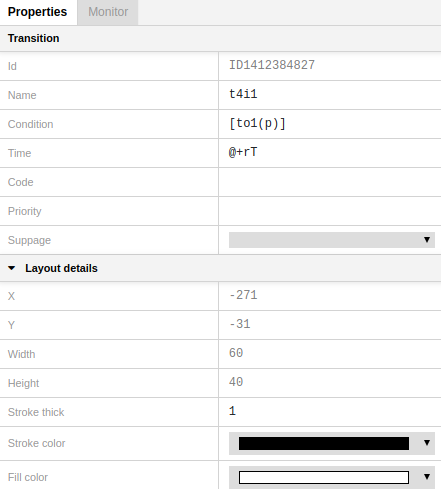

Properties Panel
The Properties Panel is located on the right side of the window. It shows the properties of an object including layout details.
To bring up the Properties panel for a particular object, click on the object in the Editor View.

Layout details
To open the layout details menu, click on the triangle next to "Layout" if it's not already opened.

X and Y show the coordinates of an object in two-dimensional space.
Width and Height show an object size.
Stroke thick defines an object frame thickness.
Stroke color allows to select a color for an object frame.
Fill color allows to select an object color.
Place properties
To bring up the Properties panel for a particular place, click on the place in the Editor View.
To edit a property, click on the cell to enter text edit mode.
Object ID can't be edited.
Name identifies a place, it may contain any sequence of characters.
Initial marking is a multiset expression that specifies the initial tokens for a place. The color set for the initial marking expression must match the color set of the place.
Colorset determines the color set, i.e. the type of all the tokens that can be put in the place.
Port type can get one of the modes: IN, OUT, IN/OUT, or Empty. After selecting one of the modes, a place acquires a corresponding label:

Transition properties

To bring up the Properties panel for a particular transition, click on the transition in the Editor View.
To edit a property, click on the cell to enter text edit mode.
Object ID can't be edited.
Name identifies a transition, it may contain any sequence of characters. It corresponds to a name inscription given to the transition in the Editor View.
Condition is a CPN ML Boolean expression that evaluates to true or false. It is used for tests on input arc inscription variables. It corresponds to a condition inscription given to the transition in the Editor View.
Time is a transition delay. The expression is preceded by @+. It corresponds to a time inscription given to the transition in the Editor View.
Code. Each transition may have an attached code segment which contains ML code. Code segments are executed when their parent transition occurs. It corresponds to a code segment inscription given to the transition in the Editor View.
Priority must be a non-negative integer expression. The lower the value, the higher the priority. Hence, a transition with priority value 1 has priority over a transition with priority value 2. It corresponds to a priority inscription given to the transition in the Editor View.
Subpage allows to select a subpage for the given substitution transition. After selecting a subpage, a blue label with the name of the subpage shows up on the transition. You can move this label to any place of the Editor View.

PortSock shows up when a transition becomes a substitution transition. PortSock contains ID of ports and sockets assigned to a substitution transition.

Arc (connection) properties

To bring up the Properties Panel for a particular arc, click on the arc in the Editor View.
To edit a property, click on the cell to enter text edit mode.
Object ID can't be edited.
Annotation is a CPN ML expression that evaluates to a multiset or a single object. It corresponds to an arc inscription given to the arc in the Editor View. You can edit it either in the Editor View or in the Properties Panel.
Direction allows to select the direction of an arc.

- PtoT - from place to transition
- TtoP - from transition to place
- BOTHDIR - both directions
Port bind property shows up if an arc is connected to a substitution transition.